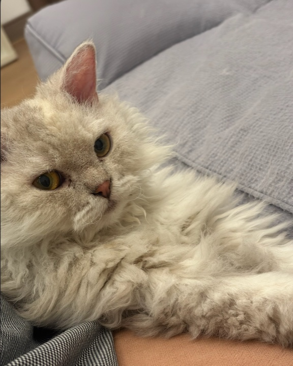
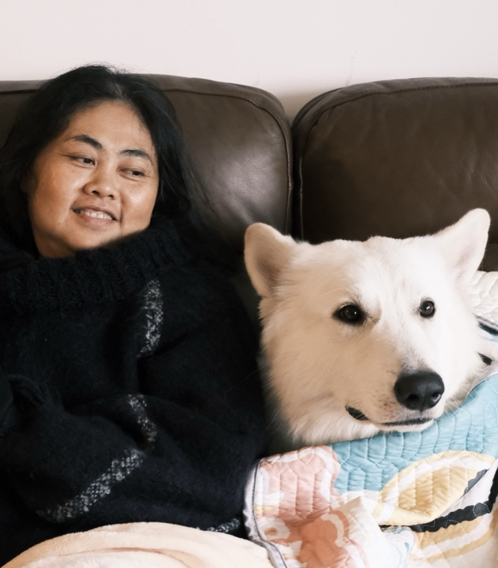

Right now
下一件事
先看这里就好：倒计时告诉你离下一站还有多久，人在重庆还是清迈，时间都按当地钟表来。
共同行程本机记录已开启
住宿区域古城西侧 · 帕辛区
交通策略城内 Grab · 郊区包车

队长 · 阿尼亚代班小5

妈妈 · 艾斯陪同小熊
同行小队小兰
同行小队小陈
同行小队小猪
One calm loop
路线不绕路
住在古城西侧就像把圆规钉在中心：城内按片区慢慢走，郊区集中包车跑一趟，少折返，也少一点“我怎么又在路上”。
● 住宿中心
--- 城市慢行
┈ 郊区包车
☂ 户外日可随天气互换
Day by day
每天只做一件大事
下面是“可以随时改”的草稿，不是军训表。每天留一点空，天气、体力和临时发现都能插队。
25SEP
重庆 → 清迈
先把人和行李送到清迈，今晚只负责睡饱。
建议抵达重庆江北 T3
国际航班预留约 3 小时。护照与购票证件放随身包，不写进共享网页。
PN6595 起飞
重庆时间出发；清迈比重庆慢 1 小时。
入住、洗澡、睡觉
不安排酒吧，不为“第一晚必须玩”牺牲第二天状态。
26SEP
古城软着陆
寺庙、泰北菜、夜市，第一晚先和古城混个脸熟。
回去睡午觉
刚落地后的留白，不加咖啡厅、不加购物任务。
27SEP
宁曼与校园夕阳
上午逛宁曼，傍晚去水库，晚上看大家还想不想逛夜市。
回民宿或找一家店坐着
不要为了“来都来了”继续暴走，为傍晚和夜市留体力。
28SEP
粘粘瀑布与手工纸
今天把郊区集中玩掉：瀑布玩水，手工纸留纪念。
简单午餐与换衣
带速干衣、水鞋、防水手机袋和一套干衣服；不要把贵重物品带到水里。
Elephant POOPOOPAPER Park
这里没有现场大象，重点是看象粪纤维变成纸并制作自己的纪念品。每日约 09:00–17:00，最后导览约 16:00。
回城休息
今晚不约复杂晚餐，洗澡、吃近处的东西即可。
29SEP
按摩修复日
瀑布后的身体交给按摩，晚上的音乐交给 North Gate。
完全自由
补觉、洗衣、单独行动、找咖啡店都可以。不设置集合任务。
早点吃晚饭
North Gate 周二 Jam Night 人多，想坐下就不要把晚餐拖晚。
30SEP
没有计划的一天
不排满，想去哪就去哪；18:00 记得去 Bar.San 报到。
Fern Forest 或 Craft Coffee
Fern Forest 适合工作日上午，周末较吵；朋友对 Craft Coffee 的咖啡和服务都明确好评。
各自喜欢的下午
逛 Warorot、回去睡觉或再做一次平价按摩。泰餐课只在大雨且大家临时想参加时启用。
长康路或河畔晚餐
不预设网红餐厅，按当晚饥饿程度和等位情况选择。
01OCT
森林寺与告别晚餐
森林寺、告别晚餐和最后一杯，慢慢把行李心情都收好。
回去休息、开始收行李
把最后一天晚上留给好好吃饭，而不是回去通宵整理。
02OCT
清迈 → 重庆
白天不赶路，晚上准时去机场，清迈下次见。
早午餐与最后一杯咖啡
选择民宿附近，不跨城追店。确认是否能寄存行李或延迟退房。
退房、寄存行李
完整地址只保留在订房 App 和五个人的私人群里。
伴手礼与自由时间
不安排郊区、不按摩到太晚，也不要购买无法托运或入境的物品。
Grab 前往清迈机场
五人带行李仍按 Grab Van 或两辆车准备，国际航班预留约 3 小时。
PN6596 起飞
预计 10 月 3 日 01:55 抵达重庆江北 T3。
Six nights, six bars
夜里再认识一次清迈
这六家按评分、氛围和营业日挑过，一晚一家刚刚好；9/25 和 10/2 是休息夜，不喝也算会玩。
Curated, not crowded
想吃、想喝、想躺
这是口袋备选，不是集章任务。看当天在哪一片、肚子想吃什么，再挑一张就行。
Restaurant
Lookbua Thai Food
朋友与公开评价双重通过。菜单很大、适合五人分享；高峰可能排队。
地图 ↗Restaurant2026 Michelin
Baan Landai
古城内较正式的一餐，适合告别晚餐；周一休息，建议预约。
地图 ↗Restaurant
Huen Muan Jai
评价量大的传统泰北菜，适合多人点一桌；不接受预约时要预留排队。
地图 ↗Restaurant
Krua Dabb Lob
便宜、味道稳，但店小且多为户外座位。五人适合错峰午餐。
地图 ↗Coffee
Akha Ama Phrasingh
本地合作农场咖啡，空间大、价格友好，帕辛寺附近顺路。
地图 ↗Coffee
Ristr8to Original
宁曼标志性拉花与浓郁咖啡，店小、可能拥挤；只在顺路且排队短时去。
地图 ↗Coffee
Fern Forest Cafe
花园氛围适合放空；周末常排队且会吵，安排工作日上午更合适。
地图 ↗Spa
Makkha Rachadamnoen
高端环境与完整服务，按摩日首选。五人同时做项目务必提前预约。
地图 ↗Massage
Lila Thai Massage
更平价的第二次按摩选择，也支持经过专业培训的女性重新就业。
地图 ↗Optional雨天备选
泰餐课
你不太想做饭，因此不进默认行程。只有持续下雨且其他人都感兴趣时再选。
Optional顺路
Baan Kang Wat
只和乌蒙寺组合。朋友认为偏贵和商业化，不值得单独打车前往。
地图 ↗Optional彻底放空
什么也不做
午睡、洗衣、单独逛店都算正式行程。这张卡永远拥有最高优先级。
Before we go
把麻烦留在出发前
能提前确认的事情先确认，到了清迈就把脑容量留给吃饭、散步和发呆；敏感资料仍只留在五个人的私人群。
待办清单
- 确认五人护照有效期、泰国入境材料与行李额度
- 提前预约 9/29 Makkha 的五人时段
- 联系 9/28 带司机的 6–9 座车，确认雨天取消规则
- 出发前一周复核六家酒吧的营业日与 Bar.San 等位方式
- 准备瀑布水鞋、速干衣、防水袋、防蚊和一套干衣服
- 向房东确认退房时间、10/2 行李寄存和机场叫车方式
- 把民宿完整地址、保单与订单号只发在私人群，不放公开网页
雨季使用说明
9 月下旬还在雨季，天气会有自己的小脾气。出发前 7 天看趋势，前 48 小时再决定瀑布日，给行程留一点转身空间。
- 短时阵雨：照常出门，咖啡店或 One Nimman 躲雨
- 持续大雨：9/28 与 9/29 互换，先按摩休整
- 雷雨或山路预警：取消瀑布，不以“必去”为理由冒险
离线说明：页面正文会缓存到手机，弱网时仍可查看；Google Maps、实时天气和外部官网需要网络。